GPBR 112 :: Lecture 17 :: SEED PRODUCTION TECHNIQUES IN VEGETABLES

TOMATO (Lycopersicum esculentus)
Tomato is one of the most important vegetable crops grown extensively in the tropical and subtropical belts of the world. It is grown mainly fresh market and to a little extent for processing. Increased attention is now being bestowed to breeding and production of tomato. Production of tomato can further be increased if improved cultural practices are combined with good quality seeds. The quality seed production techniques in tomato comprises of the following steps.
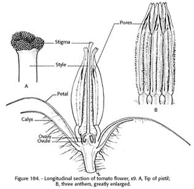 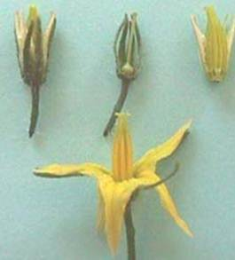
Botany
Tomato is a typical day neutral plant. It requires temperature of 15‑20° C for fruit setting. Tomato is self pollinated crop. Self fertilization is favoured by the position of receptive stigma within the cone anthers and the normal pendant position of the flower.
Method of seed production : Seed to Seed.
Stages of seed production
Breeder seed - Foundation Seed I - Foundation Seed II - Certified Seed
Varieties :
Indeterminate varieties
Pusa Ruby, Solan Gola, Yaswant (A‑2), Sioux, Marglobe, Naveen, Ptom‑9301, Shalimar‑ 1, Shalimar‑2. Angurlata, Solan Bajr, Solan Sagun, Arka Vikas. Arita Saurbh.
Determinate varieties
Roma (EC‑13513), Rupali, MTH‑15, Ptom‑18, VL‑1, VL‑2, HS 101, HS 102, HS 110, Pusa Early Dwarf, Pusa Sheetal, Floradade, Arka Meghli, Co.1, Co.2, Co.3 (Marutham), PKM.1, Py1,
Hybrids
COTH‑1, Pant Hybrid‑2, Pant Hybrid‑10, Kt‑4. Pusa Hybrid‑l‑4, Arka Shreshta, Arka Vardan, Arka Abhijit, Navell 1 &2 (Sandoz), Rupali, Sonali, MTH 6
Season : May - June and November - December
Land requirement
Selection of suitable land for tomato seed production is important where the previous crop should not be the same variety to avoid the contamination due to the volunteer plants.
Isolation requirement
For Seed production of tomato, varieties require minimum of 50 M for foundation seed and 25 M for certified seed. For hybrid seed production, it requires minimum of 200 M for foundation (parental line increase) and 100 M for certified hybrid seeds.
Seed rate
For i) Varieties ‑ 300‑ 400 g/ha ii) For F1 hybrid ‑ Male parent 25 g/ha; Female parent 100 g/ha.
Nursery
Sow the seeds in raised nursery bed of 20 cm height, in rows of 5 cm gap and covered with sand. Eight and ten nursery beds will be sufficient to transplant one acre. Apply 2 kg of DAP 10days before pulling out of seedling.
Transplanting
Transplanting should be done with the seedlings are 20‑25 days old, preferably at evening time. Spacing is 60 x 45 cm (90 x 60 cm for female parent and 60 x 45 cm for male parent of hybrids).
Manuring
After thorough preparation of a field to fine tilth, apply 25 tons of FYM per ha. Apply 100 : 100: 100 Kg of NPK/ha of which, 50% of the N is applied as
Roguing
The roguing should be done based on the plant characters (determinate / indeterminate), leaf, branching and spreading characters and also based on fruit size, shape and color. The plants affected by early blight, leaf spot and mosaic (TMV) diseases should be removed from the seed production field.
Planting ratio
For hybrid seed production, the female and male parents are normally planted in the ratio of 12:1 or 12:2.
Pest and disease management
The major pests attacking tomato crop are leaf eating caterpillars and fruit borers, which can be controlled by spraying. The major diseases in tomato are early blight and mosaic virus. The early blight rot can be controlled by spraying Benlate or Dithane M‑45.
Harvesting seed extraction and processing
The fruits are harvested after full maturity of the fruit when turn in to red color fruits from first and last one or two harvests should not be used for seed extraction.
Stages of maturation: Mature green, Breaker, Turning, Pink, Red, Dark red / over ripe
The fruits from in between 6‑7 harvest should be used for seed extraction. The seed viability is depends on the method on which the seeds were extracted and hence, it is more important to choose proper methods of seed extraction. Before seed extraction, the fruits are to be graded for true to type and selection of medium to large size fruits for getting higher recovery of quality seeds.
The acid method of seed extraction is the best method for tomato seed extraction. In this method, the fruits are to be crushed into pulp and taken in a plastic containers (or) cement tank. And then add 30 ml of commercial Hydrochloric acid per kg of pulp, stir well and allow it for ½ hour. In between this duration the pulp may be stirred well for one or two times. This facilitates the separation of seed and pulp. After ½ hour, the seeds will settle down at the bottom and then the floating fraction is to be removed. The collected seeds should be washed with water for three or four times.
- While following acid method we must use only plastic or stainless steel containers or cement tank.
- Care must be taken to avoid the usage of iron or zinc containers, which will affect the viability potential of the seeds and as well damage to the containers due to chemical reaction with acid.
- For large scale seed extraction we can use the tomato seed extractor developed by Tamil Nadu Agricultural University.
- The seeds extracted by this machine may again be treated with commercial Hydrochloric acid @ 2‑3 ml/kg seed with equal volume of water for 3‑5 minutes with constant stirring. And then seed should be washed with water for to four times.
- It is easy to dry the seeds extracted by acid method and also remove the fungus growth over the seed coat, thus seeds possess golden yellow colour and high vigour.
- The seed extracted by fermentation method posses poor vigour and off colour due to fungal activity.
Comparison of different seed extraction methods
|
Fermentation |
Acid |
Alkali |
Method
|
Mix fruit pulp with water - 24 - 48 h
|
HCl @10ml / |
Washing soda @ 900mg/4 l of water- equal volume – overnight soak |
Salient features
|
|
|
per cent
|
Fermentation method
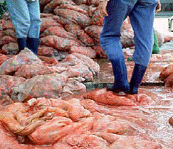 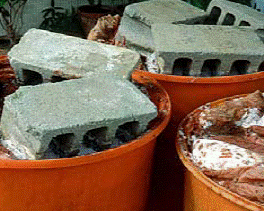
Manual Crushing Fermentation
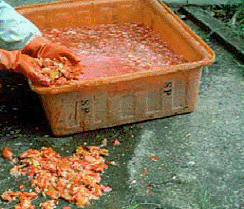 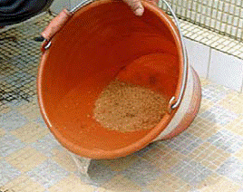
Washing Extracted seed
Acid seed extraction
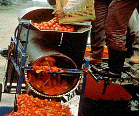 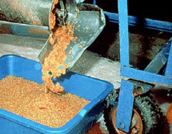
Mechanical Crushing Extracted seed
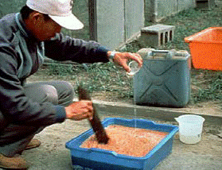 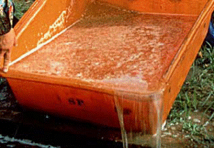
Acid treatment Washing of seeds
Drying and grading
Seeds are to be dried in the shade. It should never be dried in hot sun. the safe moisture content of the seed for grading is 8 to 9 per cent. Seeds can be graded using 6/64’’ round perforated sieve.
Storage
The seeds dried to safe moisture content after treating either with captan or thiram @ 2 g/kg can be stored for 15 months in moisture vapour pervious containers, while it can be stored in moisture vapour proof containers for 30 months.
Hybrid seed production:
In tomato the hybrid seed production is normally done by 'Emasculation and Hand Pollination'. However use of chemical hybridizing agents (MH‑1000 ppm) or CMS lines are also practiced
Emasculation and dusting
- Emasculation is done before the anthers are mature and the stigma has become receptive to minimize accidental self pollination.
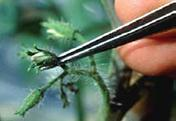
Selection of flower
- Thus emasculation is generally done in the evening, between 4 PM and 6 PM one day before the anthers are expected to dehisce or mature and the stigma is likely to become fully receptive.
- Emasculate the bud by hand with the help of needle and forceps. Remove the calyx, corolla and staminal column or anthers, leaving gynoecium i.e., stigma and style intact in the flower.
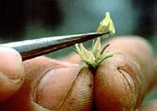 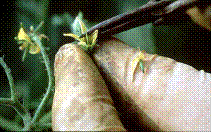
Removal of anther cone Removal of corolla
- Emasculated flowers should be covered immediately with red coloured paper cover to protect against contamination from foreign pollen and also for easy identification of emasculated bud during dusting.
- Remove the red paper cover of the emasculated bud and dust the pollen gently over the stigmatic surface using cotton or camel brush, etc.,
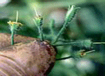 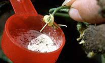
Emasculated flower Dusting of pollen
- After dusting, the emasculated flowers are again covered with white or other coloured paper cover for two to three days.
- Pollen collected from one male flower can be used for dusting 5 to 7 emasculated flowers.
Pollen collection
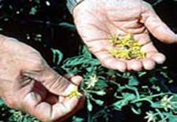 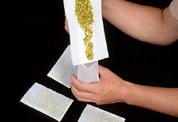
Male flower Collected flower
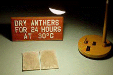 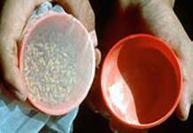
Drying of flower Collection of pollen I
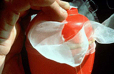 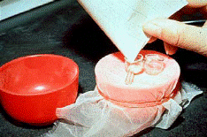
Collection of pollen II Pollen for hybrid crosses
Seed Yield : 100 -120 Kg/ha
Seed Certification
Number of Inspections
A minimum of three inspections shall be made as follows:
1. The first inspection shall be made before flowering on order to verify isolation, volunteer plants, and other relevant factors,
2. The second inspection shall be made during flowering to check isolation, offtypes and other relevant factors
3. The third inspection shall be made at maturity and prior to harvesting to verify true nature of plant and other relevant factors
Specific requirements
Factors |
Foundation |
Certified |
Off types ‑ variety |
0.1 % |
0.2% |
Hybrid |
0.01% |
0.05% |
Plants affected by seed borne diseases |
0.1 % |
0.5% |
Seed standard (variety and hybrid)
Factors |
Foundation |
Certified |
Pure seed (mini) |
98% |
98% |
Inert matter (maxi) |
2% |
2% |
Other crop seeds (maxi) 5/kg |
5/kg |
10/kg |
Weed seeds (maxi) |
None |
None |
Germination (mini) |
70% |
70% |
Moisture (maxi) |
8% |
8% |
For VP container |
6% |
6% |
| Download this lecture as PDF here |